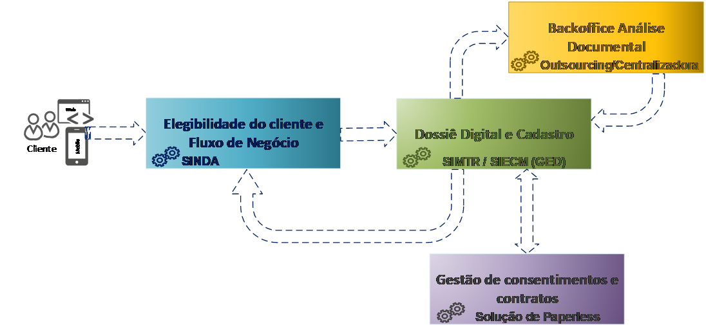
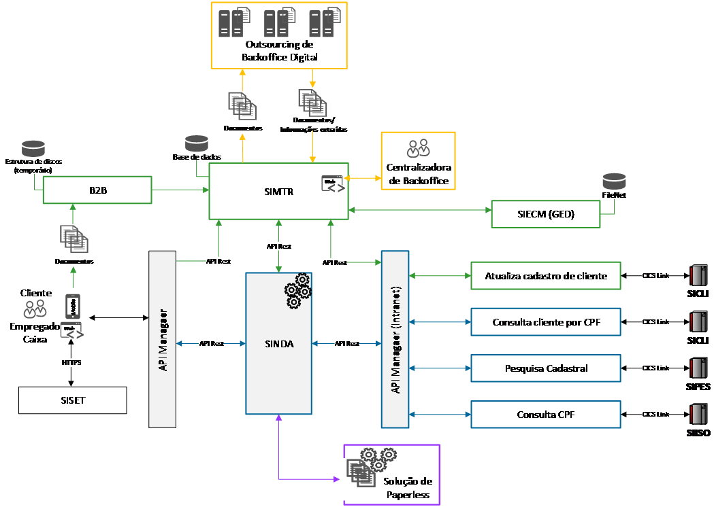
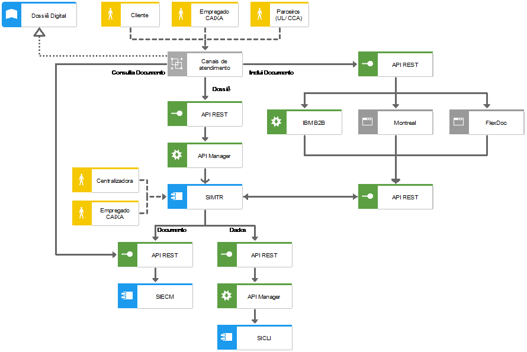

Dossiê Digital
Essa arquitetura de solução considera a necessidade de especialização dos processos digitais de contratação, que compreendem a elegibilidade do cliente e fluxo de negócio, o dossiê digital e atualização de cadastro, com o backoffice de análise documental e extração de dados e, a gestão de consentimento e contratos, conforme representado no desenho abaixo.

-
Elegibilidade do cliente e fluxo de negócio: o SINDA é o responsável por realizar a orquestração dos fluxos de elegibilidade do cliente (parâmetros de regularidade do CPF, pesquisa cadastral, fraudscore, completude de dados cadastrais) e fluxos reusáveis de contratação de produtos (fluxos negociais, tais como abertura ou atualização de contas, contratação de crédito etc), com os estágios, integrações e controles relacionados, mantendo a jornada de contratação uniforme e contínua em quaisquer canais. Os originadores de negócio também podem realizar os fluxos especialistas.
-
Dossiê digital e atualização de cadastro: o SIMTR é responsável pelo controle de Dossiês de produtos e de clientes, ou seja, pela gestão dos documentos do cliente, do processo de análise documental e atualização do cadastro do cliente. Os documentos são armazenados no FileNet, por meio do SIECM. O cadastro de clientes é mantido no SICLI.
-
Backoffice de análise documental e extração de dados: pode ser realizado por empresa externa (outsourcing documental, atualmente as empresas FlexDoc e Montreal) ou pelas Centralizadoras de backoffice da CAIXA. Faz parte do processo de Dossiê Digital.
-
Gestão de consentimento e contratos: pode ser realizada através de uma solução de paperless, ainda não disponível na Caixa, ou até mesmo por um processo digital através de autenticação do cliente e visualização dos termos por meio digital.
-
Segue abaixo o detalhamento da solução descrita

Detalhamento do Dossiê Digital:
Primeiramente é necessário que a área gestora do Dossiê Digital (GEBAN) realize no SIMTR toda a parametrização de tipos de documentos, obrigatoriedade de atributos, validade de cada documento (prazo no qual o documento está apto para reuso) etc.
-
Os tipos de documentos do SIMTR devem refletir a tipologia documental do SIECM, que deve estar de acordo com a tipologia do SIICO.
-
O SIICO deve ser a fonte primária da tipologia documental da CAIXA, onde todos os demais sistemas que necessitam dessa informação devem buscar.
-
O SIICO também é responsável pela hierarquia/agrupamento dos tipos de documentos.
-
O SIECM contém os atributos (metadados) de cada tipo de documento.
-
No SIECM devem ser definidos como obrigatórios apenas os atributos chaves, necessários para busca do documento ou para garantir seu ciclo de vida.
-
O SIMTR pode definir como obrigatórios outros atributos, de acordo com a necessidade do cadastro ou dos serviços de extração documental, mas não pode alterar os atributos que estão obrigatórios no SIECM.
-
Devem ser utilizadas classes específicas para cada documento, não devendo utilizar as classes genéricas do SIECM.
-
Caso a tipologia documental ainda não exista no SIECM, é necessário solicitar a criação para a GESES.
-
As diretrizes para o Gerenciamento Eletrônico de Documentos estão descritas no MN AD238.
-
As diretrizes do Dossiê Digital estão descritas no MN CR523.
Depois é necessária a criação dos tipos de Dossiês de cadastro e de produtos no SIMTR, definindo:
-
Lista dos documentos constantes em cada dossiê;
-
Detalhamento das condições de cada documento (obrigatoriedade, forma de validação/confiabilidade, dados a serem extraídos);
-
Dados declarados, se necessário.
-
O Dossiê de cadastro, que contém os documentos do cliente, deve seguir às diretrizes da GECAD e MN CR540.
-
Os Dossiês de produtos, que contém os documentos específicos de cada processo de contratação, devem seguir as diretrizes dos gestores de cada produto/serviço.
Durante a execução do processo de contratação, ao chegar no ponto de atualização cadastral, o Canal/SINDA consulta no SIMTR o Dossiê para este processo (informando o processo e o cliente).
SIMTR verifica se já possui Dossiê para este cliente e processo aberto.
-
Caso já possua Dossiê, SIMTR informa a situação.
-
Caso não possua Dossiê em aberto, o SIMTR informa:
-
Quais documentos necessários para este processo;
-
Quais desses documentos o cliente já possui, para reuso (que estejam válidos e atendam aos critérios de confiabilidade definidos);
-
Eventuais informações declaradas necessárias;
-
Endereço para upload dos documentos.
-
O SIMTR deve possuir o controle da forma de validação dos documentos de cada processo, bem como pela distribuição equitativa para as empresas de backoffice digital quando necessário.
- O reuso dos documentos deverá ser obrigatório sempre que o cliente já possuir o documento, dentro do prazo de validade definido nas parametrizações dos tipos de documentos, e com nível de confiabilidade igual ou superior ao parametrizado no tipo de dossiê.
Assim, o SIMTR informará ao Canal o endereço para upload apenas dos documentos faltantes, que poderá ser o link de uma empresa de backoffice digital ou o link do B2B caso a validação seja realizada por Centralizadora Caixa.
- O SIMTR irá registrar no dossiê criado para o cliente os documentos que estão sendo reusados neste processo.
O Canal é responsável por mostrar ao cliente a lista de documentos, realizando o upload por meio do link informado pelo SIMTR, bem como apresentar os formulários a serem preenchidos para informações declaradas.
Se desejar visualizar os documentos já existentes, Canal busca os documentos no SIECM.
Quando a validação dos documentos for realizada por empresa de backoffice digital, o Canal deve enviar os documentos para a empresa informada pelo SIMTR.
- Após análise, a empresa encaminha o resultado, dados extraídos (quando for o caso) e os documentos para o SIMTR.
Quando a validação dos documentos for realizada por Centralizadora Caixa, o Canal deve enviar os documentos para o SIMTR, por meio da ferramenta B2B, que é responsável pela verificação destes arquivos de acordo com os parâmetros estabelecidos (tipo de arquivo, tamanho máximo, inexistência de vírus) e disponibilização do arquivo.
- A Centralizadora efetua a análise documental e registra no SIMTR.
Os dados declarados são enviados pelo Canal através de API a ser disponibilizada pelo SIMTR.
O SIMTR armazena os documentos por meio de API do SIECM (Sistema de Gestão Eletrônica de Documentos - ferramenta IBM FileNet).
O SIMTR atualiza as informações de cadastro (sejam obtidas pela extração ou dados declarados) através da API do SICLI.
Conforme definições da GEBAN, visando simplificar o fluxo de Dossiê Digital na contratação de produtos e serviços, o SIMTR deve possuir selos padronizados de acordo com o nível cadastral do cliente.
-
A definição dos selos deve unificar as informações de completude do cadastro do cliente, confiabilidade do documento e dossiê de cadastro, conforme exemplo abaixo:
-
Bronze: Cliente sem marca DOI no SICLI (com os dados mínimos completos) e com dossiê de cadastro contendo o Documento de Identificação não validado.
-
Prata: Cliente sem marca DOI no SICLI (com os dados mínimos completos) e com dossiê de cadastro contendo o Documento de Identificação validado.
-
Ouro: Cliente sem marca DOI e com dossiê de cadastro contendo o Documento de Identificação e Comprovante de Renda, ambos validados.
-
-
Será consideração documento validado aquele que tiver sido aprovado no processo realizado por Backoffice Especializado Caixa ou Backoffice Externo (empresas terceirizadas de prestação de serviço de backoffice).
-
Os níveis cadastrais (selos) acima são definidos e detalhados pela GEBAN, em conjunto com as demais áreas de negócio envolvidas.
-
Cada gestor de produto pode definir qual o selo necessário para contratação de seus produtos, bem como se será necessária a inclusão de documentos adicionais específicos do produto (dossiê de produto).
Atribuições dos sistemas que compõem o Dossiê Digital:
O SIMTR possui as seguintes atribuições:
-
Parametrização dos tipos de documentos e suas características (atributos obrigatórios, validade etc);
-
Parametrização dos Dossiês de cadastro e de produtos (documentos necessários em cada processo de contratação destes produtos, forma de validação e confiabilidade necessária para cada documento, dados a serem extraídos e dados declarados);
-
Controle dos Dossiês de clientes (quais foram os documentos e dados enviados pelo cliente em cada processo) e da situação de cada documento (validado, não validado, faltante);
-
Reuso dos documentos dos clientes em diferentes processos de contratação de produtos e serviços, sempre que existir um documento que atenda às regras estabelecidas pelas áreas negociais e parametrizadas no Dossiê (validade e confiabilidade);
-
Controle da distribuição de documentos para as empresas de outsourcing documental (atualmente FlexDoc e Montreal);
-
Controle do fluxo de análise documental, quando realizada por Centralizadora Caixa;
-
Atualização no SICLI dos dados cadastrais obtidos na extração documental;
-
Inclusão dos documentos no GED (FileNet), por meio do SIECM, com todos os atributos/metadados necessários;
-
Frontend para realização das parametrizações acima descritas pelas áreas de negócio, bem como emissão de relatórios;
-
Frontend para avaliação documental das Centralizadoras de backoffice Caixa;
-
Recepção dos dados e documentos, sejam enviados pelos canais (por meio do B2B) ou pelas empresas de backoffice digital;
-
Disponibilização das APIs para consulta e inclusão, a serem consumidas pelo SINDA e Canais.
O B2B é responsável pela recepção de arquivos, verificação de antivírus dos documentos recebidos da Internet e disponibilização para o SIMTR.
O SIECM é o sistema responsável pela gestão da Plataforma de GED da CAIXA, composta atualmente pelas ferramentas IBM FileNet e Enterprise Records, possuindo as seguintes atribuições:
-
Inclusão dos documentos no GED, com todos os metadados necessários;
-
Consulta de documentos no GED a partir dos metadados definidos;
-
Versionamento dos documentos;
-
Ciclo de vida e expurgo dos documentos de acordo com a tipologia e situação do documento;
O SICLI é responsável pelo registro de dados cadastrais de clientes da CAIXA, disponibilizando APIs para inclusão, atualização e consulta.
A arquitetura da solução está representada na figura abaixo:

Definições
| Termo | Definição |
|---|---|
| Backoffice Digital | Processo de análise/validação documental realizado por empresa de outsourcing. |
| Ciclo de vida | Define os prazos de arquivamento de um documento, bem como quando o mesmo deve ser expurgado do repositório. Deve considerar a tipologia documental e a situação do documento (validado, não validado) |
| Confiabilidade | Define o quanto o documento é confiável para reuso, de acordo com a forma de validação do documento que foi efetuada, podendo ser: pelo atendente da agência, atendente de parceiro (UL ou CCA), outsourcing documental (empresas de backoffice digital, tais como FlexDoc e Montreal, informando qual o serviço foi efetuado pela empresa) ou centralizadora de backoffice da Caixa |
| Dossiê Digital | Controle da lista de documentos, processo de validação e dos dados de clientes necessários para contratação de produtos e serviços da CAIXA, bem como dos documentos disponíveis para reuso em novos processos. |
| Validade processos. | Prazo pelo qual aquele tipo documental está apto para ser reusado em novos |
Referências
-
Portal de Demandas de TI - RTC: [https://gid.caixa:9443/ccm/web]{.underline}
-
Avaliação/Revisão de Arquitetura 20624710
-
Avaliação/Revisão de Arquitetura 17800136
-
Avaliação/Revisão de Arquitetura 18927745
-
Avaliação/Revisão de Arquitetura 18945762
-
Avaliação/Revisão de Arquitetura 20636834
-
Portal de Arquiteturas de Referência de TI: http://arquiteturati.caixa/arquitetura_referencia/
-
Legislação:
-
Lei Geral de Proteção de Dados Pessoais (LGPD): Lei Nº 13.709/2018
-
Normativos: [http://sismn.caixa/]{.underline}
-
MN AD238 -- Gestão Documental - Documentos Arquivísticos Digitais em Plataforma ECM/GED
- MN CR523 -- Dossiê Digital
- MN CR540 -- Cadastro de Clientes na Caixa
- MN TE111 -- Padrões Arquiteturais